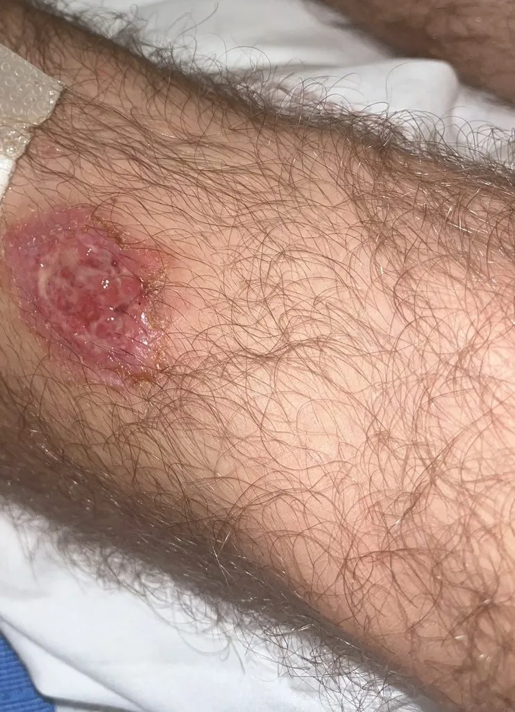

其他无脊椎动物 · 动物界
利什曼原虫 Leishmania donovani

由白蛉叮咬传播、寄生于人体巨噬细胞内的原虫，可引起长期发热、肝脾肿大、贫血和皮肤变黑，俗称黑热病。
- 分类
- 门眼虫门纲动质体纲目锥虫目科锥虫科属利什曼属
- 栖息环境
- 人体和犬等动物的巨噬细胞内，传播阶段在白蛉消化道
- 地理分布
- 印度、东非、地中海与中亚，中国长江以北曾有流行，现已基本消除
- 保护级别
- 暂无评估
物种志
利什曼原虫在人体内以无鞭毛体（又称利杜体）的形式存在，虫体只有2–4微米，圆形或卵圆形，寄生在巨噬细胞内。在白蛉体内，它则变成前端有一根鞭毛的前鞭毛体，能够自由活动。
当雌性白蛉叮咬患者或病犬时，吸入含无鞭毛体的巨噬细胞，虫体在白蛉胃内转变为前鞭毛体并大量繁殖；白蛉再次吸血时，前鞭毛体被注入人体，很快被巨噬细胞吞噬，却在细胞内顽强存活、繁殖，随血流散布到肝、脾、骨髓和淋巴结，引起内脏利什曼病。患者表现为长期不规则发热、肝脾肿大、贫血、白细胞减少，皮肤逐渐色素沉着，因此得名黑热病。预防以防蛉为主：使用蚊帐、纱窗和驱虫剂，管理病犬，治疗可用锑剂或两性霉素B。我国已基本消除该病，但仍需监测。
形态与习性
- 形态无鞭毛体2–4微米，寄生于巨噬细胞内
- 传播媒介白蛉，叮咬时注入前鞭毛体
- 储存宿主患者与病犬
- 感染途径受携带前鞭毛体的白蛉叮咬
- 症状长期发热、肝脾肿大、贫血、皮肤变黑
- 防护防蛉叮咬、灭蛉、管理病犬
- 治疗锑剂或两性霉素B
趣味知识
- 它躲在人的巨噬细胞里，躲避免疫系统的清除。
- 白蛉叮咬是黑热病最主要的传播方式。
- 患者皮肤会逐渐变黑，所以叫黑热病。